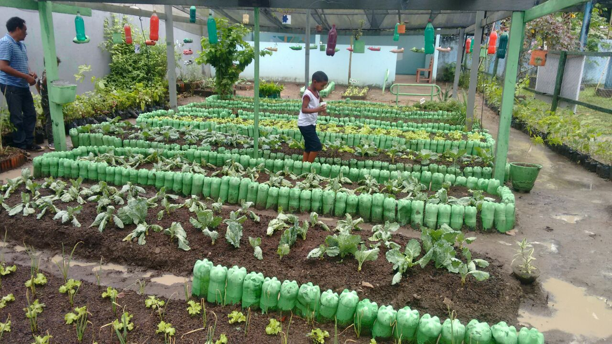
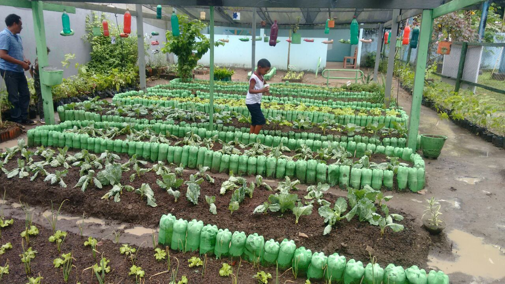

Sobre Nós
Nossa missão,desde 2012,é lutar pela preservação de toda flora e fáuna do mundo,toda biodiversidade existente no planeta deve ser protegida e somos a vanguarda nessa iniciativa.A Safeplanet é uma ONG brasileira criada por jovens entusiastas que almejam um futuro próspero pras futuras gerações.Somos completamente independentes de governos,religiões,políticas e ideologias;somos sustentados por apoiadores e parceiros do Brasil todo.Venha fazer parte desse projeto,juntos somos mais!

Nosso último projeto aconteceu nas escolas públicas de São Paulo ensinando e espalhando o cuidado com o meio ambiente assim como sua importância,o evento ocorreu na primeira semana de fevereiro de 2020 em parceria com a Secretaria de Educação de São Paulo
 

Nossa preocupação, também está com nossos animais, Um dos últimos casos de queimadas no Brasil foi na nossa Amazônia, ela que é a maior floresta tropical do mundo registrou um aumento de 196% dos focos de incêndio em relação ao mesmo período no ano anterior. Os incêndios no bioma responderam por 65,1% do total. O percentual em relação a outros biomas é o maior entre os meses de agosto desde o ínicio de 2003. Veja em nossa tabela abaixo o número de queimadas em alguns estados do Brasil.
Estados com o maior número de queimadas de janeiro a agosto de 2019:
| Estado | Focos |
|---|---|
| Mato Grosso | 13.641 |
| Pará | 9.009 |
| Amazonas | 6.923 |
| Tocantins | 5.655 |
| Rondônia | 5.512 |
| Maranhão | 4.673 |
| Roraima | 4.606 |